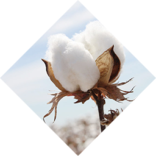

产品系列
PRODUCT SERIES
Commitment to growth up healthy婴幼儿系列
BABY SERIES
阳光棉亲肌瞬干纸尿裤、拉拉裤系列
Sunshine Cotton Pro-skin instant Drying Diaper/Pull-ups
杨光棉亲肌湿纸巾系列
Sunshine Cotton Pro-skin tissue
纯植物婴幼儿洗护系列
Pure plant washing
妈妈系列
MOTHER SERIES
天然妈妈护肤系列
Natural care cream for skin
产品理念
PRODUCT PHILOSOPHY
Commitment to growth up healthy
源自英国皇室的百年护理经验造就了百诺恩纸尿裤追求瞬间干爽、超薄、超柔的完美主义！
纸尿裤材料采用苏格兰大草原的阳光棉，质感柔软、亲肤不刺激、纯净无污染，产品造型采用科学的人体工学剪裁设计，
更人性化贴合宝宝形体，令宝宝更加健康舒适的成长。
BEINOEN take full use of his advantage that a hundred year experience on baby caring in UK.We are committed to the research of no-trace instantaneous absorbing,ultrathin and soft! The cotton of Instant Drying Diaper/Pull-ups are from England pampa,it's super soft,comfortable for skins,pure without any prollution,the product model fit human body perfectly to enhance the comfort when baby use our product,it will benefit baby's grow up.

- 


百诺恩科研所提供四大核心技术
致力于打造极致瞬吸干爽、亲肤呼吸、纤薄柔软的纸尿裤，百诺恩所做的一切，都为了宝贝能够在无尽关爱中，安睡，畅玩。
UK BEINOEN INSTITUTES provide 4 core technologies to support our product competiveness
BEINOEN is committed research the Drying Diaper with the advantage that instant absorbing and long-term dry and ultrathin &
comfortable feeling,All efforts did by BEINOEN are build an environment with endless love,good sleep and fun.
-
无痕瞬吸速干技术
INSTANTANEOUS VELOCITY DRY
百诺恩科研所研究表明，纸尿裤亲肤层每增加1%湿度，即有可能增加23.4%红屁屁概率，增加11.6%尿布疹、湿疹概率，针对核心尿裤干爽问题，创新性研发I无痕瞬吸速干技术，纸尿裤亲肤层瞬间及长效干爽度提升86%，从而基本解决因亲肤层湿度引起的红屁屁、尿布疹及湿疹引起的皮肤问题。
UK BEINOEN INSTITUTES provide a study data to show us when the humidity for the skin touch layer of diaper increase 1%, it will increase the rate of baby get red buttock to 23.4%, and increase 11.6% diaper rash, in order to solve this issue BEINOEN initiate an innovation that no-trace instantaneous absorbing and quick drying technology developed aiming at diaper’s problem of drying and comfortability, instant and long-term dry and comfortable feeling enhanced by 86% via diaper pro-skin layer, effectively solving problems caused by humidity such as red buttock, diaper rash, eczema and so on.
-
神奇锁水颗粒
LOCK WATER FACTOR
采用神奇锁水颗粒，吸水重量可高达自身重量35倍，配合非织造纤维网表面1000万个透气微孔，有效吸收尿液，排走湿气，保持纸尿裤干爽长达12小时。内表层采用立体凸纹设计增加99%吸收面积及300万透气纤维孔，加上外表层极致棉柔质感，给宝宝带来内到外的肌肤呵护。
Adopting magic water-blocking particles which can absorb weight 35 times that of its own, plus there is a Non-woven fiber mesh containing 10millions of invisible fiber holes in surface, effectively absorbing urine, removing moisture, making diaper dry and comfortable for 12 hours. The inner layer design with bulge shape will increase the absorbing surface to 99% and 3 million of invisible fiber holes in surface, plus the super soft design for outer surface to provide a full protection & care for baby’s skin.
-

纤薄科技
NON-WOVEN COMPOSITE
采用纤薄科技，层层环绕，将6层高分子绵柔表层嵌入超薄无纺布复合芯体。整体厚度仅有2.8毫米！选用进口英国原料，柔滑舒适，不断层不起垛，彰显皇家贵族风范。
Thin and slim technology adopted, laminated surrounding, embedding 6 layers of soft high polymer surface layers into super thin non-woven composite core, total thickness just only reach 2.8mm, raw material comes from UK, It’s soft, smooth and comfortable, no layer break, no buttress.
-
非织造纤维网
FIBER MESH OF NON-WOVEN
为了增加透气性，带给宝宝更舒爽的体验，特采用先进FIBER MESH OF NON-WOVEN非织造纤维网，其表面的1000万个隐形纤维孔瞬间锁水，尿液不返渗，带来持久干爽体验。
Non-woven fiber mesh containing 10millions of invisible fiber holes in surface, enabling instant water-blocking, no return penetration, long-term ventilation, making baby enjoy lastingly dry and comfortable experience.